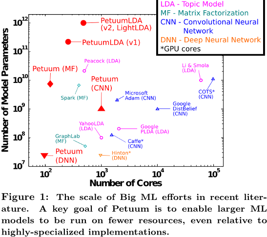
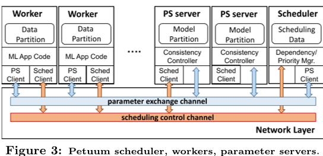
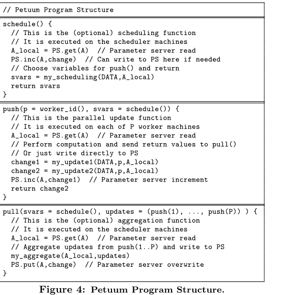

[KDD'15] Petuum: A New Platform for Distributed Machine Learning 论文阅读
Petuum 是一家位于美国匹兹堡 (Pittsburgh) 的人工智能创业公司, 由卡内基梅隆大学 (CMU) 的邢波 Eric Xing 教授创立. Petuum 团队的技术实力已经获得了业内广泛的认可, 并取得了诸多的奖项, 其中包括 ACM 云计算研讨会上的最佳论文奖、 CBInsights 的全球 AI 初创公司 100 强以及 GWC 2017 年 G-Summit 峰会上的 AI 初创公司 10 强. 迄今, Petuum 的融资总额已达一亿八百万美元, 成为获投资额度最高的早期人工智能初创公司之一.
#0. 摘要
当前的现代先进机器学习 (ML) 程序的并行化策略通常采用细粒度操作, 并突破了以 MapReduce 为代表的经典批量同步处理范式, 甚至引入了依赖于 ML 程序图形化表示的专用算子. 然而, 这些多样化的方法往往使系统与算法设计朝不同方向发展, 导致难以找到一种通用平台, 以满足大规模下多种不同 ML 程序的需求.
我们提出了一种通用框架, 系统性地应对大规模 ML 中数据并行与模型并行所面临的挑战. 这一框架充分利用了 ML 程序背后若干关键特性 – 这些特性使其有别于传统以操作为中心的程序: 即错误容忍性、动态结构以及非均匀收敛性.
该框架能够显著提升多个知名 ML 程序的运行性能: 不仅大幅缩短执行时间, 还支持更大规模的模型训练, 同时在规模适中的计算集群上即可轻松实现.
#1. 引言
机器学习 (ML) 正逐渐成为从数据中提取信息的主要机制. 企业拥有海量的数据, 传统批量或分批方式处理这些数据的效率过于低下, 无法实现.
- 图像识别系统: Billion 级别参数的深度学习模型;
- 广告系统: 高达 10^6 个主题的主题模型;
- 推荐系统: 依赖高维矩阵分解改善精度;
这些需求无法通过单台机器满足.
我们认为, 从可扩展执行的角度来看, 阻碍众多前沿机器学习模型和算法在大规模"大数据学习"场景下得到更广泛应用的主要原因, 在于这些模型和算法难以从学术界的实验环境迁移至实际生产环境 – 后者往往规模庞大、不确定性更高, 例如企业级集群或云端平台. 而在这些环境中, 要确保原始程序的正确运行, 必须对分布式环境及资源的底层细节进行精准把控与深入掌握, 而这恰恰需要高度复杂的分布式编程技术, 绝非易事.

许多平台已提供了部分解决方案, 以弥合这一从研究到生产的鸿沟:
- Hadoop & MapReduce: 简单性使其难以充分发挥机器学习的特性
- Spark: 未实现对计算与通信的精细化调度
- GraphLab 和 Pregel: 关注基于图的模型, 但是处理不了像主题建模和回归分析这样的机器学习任务
- PS 和 Piccolo: 过于底层, 没有为用户提供更高层次、通用性强的构建模块 – 例如调度机制、模型划分策略以及可控的通信方式
总之, 当前支持分布式机器学习的各类系统, 各自在效率、正确性、可编程性及通用性之间展现出独特的权衡取舍.
在本文中, 我们从效率、正确性、可编程性和通用性之间的权衡这一全新视角, 探讨了构建分布式机器学习框架的问题. 我们注意到, 大多数 (甚至可以说是所有) 机器学习程序的一个显著特征是: 它们都由一个明确的数据目标函数定义 (例如似然、误差损失或图割), 而目标正是在模型参数及其他中间变量所限定的空间内, 实现该函数的最优值. 此外, 这些算法还具有共同的计算模式 – 即均采用迭代收敛的过程 (参见公式 1) . 机器学习程序的真正目标是快速、高效地收敛至最优解, 而我们认为, 细粒度的容错机制与强一致性, 只是实现这一目标的一种手段, 甚至未必是最为高效的途径.
我们提出了一种全新的分布式机器学习框架 – Petuum, 其构建基于以机器学习为核心的优化理论原则, 而非此前探索过的多种操作目标.
为了充分利用这些特性, Petuum 提出了三个新颖的系统目标, 这些目标基于上述机器学习程序的关键属性, 旨在大规模加速其收敛过程:
- Petuum 通过有限的延迟保证同步参数状态, 这种机制利用了机器学习固有的容错特性, 能够确保计算结果的正确性, 同时通信开销远低于传统的每轮批量同步方式;
- Petuum 提供动态调度策略, 能够实时考虑模型参数之间不断变化的结构依赖关系, 从而最大限度地降低并行化误差和同步成本;
- 由于机器学习程序中的参数收敛代价并不均衡 (即所需更新次数各不相同), Petuum 会优先对尚未收敛的模型参数进行计算, 以实现更快的全局收敛速度.
#2. 前置依赖: 数据和模型并行
我们首先提出一种基于原则的迭代收敛型机器学习程序表述, 这种表述揭示了数据与模型之间的二元对立, 为 Petuum 的并行系统架构 (§3) 、算法设计 (§4) 以及理论分析 (§5) 提供了灵感. 请考虑以下将机器学习视为由目标函数驱动的迭代收敛型程序的编程视角:
迭代收敛的机器学习算法: 给定数据 D 和损失 L (即一种适应度函数, 如 RMS 损失、似然性或间隔), 典型的机器学习问题可被表述为: 反复执行以下更新方程, 直至模型状态 (即参数和/或隐变量) A 达到某种停止条件:
其中, 上标(t)表示迭代. 更新函数 ∆L() (用于优化损失 L) 对数据 D 和模型状态 A 进行计算, 并输出中间结果, 供 F()进一步汇总. 为简化起见, 在本文后续部分, 我们省略了下标中的 L, 但需明确的是, 我们所关注的所有机器学习程序均显式定义了损失函数, 这一损失函数可用于监测收敛性和解的质量, 而不同于那些不附带此类损失函数的启发式方法或操作流程.
在大规模机器学习中, 数据集 D 和模型 A 都可能非常庞大. 数据并行化 – 即将数据划分到多台机器上处理 – 是解决大数据问题的常用策略.
#3. Petuum 框架
Petuum 的核心目标是让数据并行和模型并行的机器学习算法实现起来更加简便. 为此, Petuum 为关键系统提供了 API, 以简化这一任务:
- 一个参数服务器系统, 它允许程序员通过便捷的分布式共享内存接口, 从任意机器访问全局模型状态 A, 该接口的设计类似于单机编程; 同时, 系统采用了一种有界异步一致性模型, 既能确保数据并行的收敛性, 又免去了用户手动进行网络同步的繁琐操作;
- 一个调度器, 可对模型并行更新 ∆()的并行顺序进行精细控制 – 本质上, 调度器让用户能够自定义自己的机器学习应用一致性规则.
#3.1 Petuum 系统设计
机器学习算法展现出若干可被利用的原则, 以加速分布式机器学习程序: 参数间的依赖关系结构、参数的非均匀收敛性, 以及有限的误差容忍度. Petuum 允许开发者编写数据并行和模型并行的机器学习程序, 充分挖掘这些原则的潜力, 并能轻松扩展至大数据和大模型应用领域. Petuum 系统由三个核心组件构成 (见图 3) : 调度器、工作节点和参数服务器; 而 Petuum 的机器学习程序目前采用 C++ 编写 (未来不久将支持 Java) .

调度器: 调度系统通过允许用户控制哪些模型参数由工作机器更新, 实现了模型并行. 这一过程由用户自定义的调度函数
schedule()(对应于S(t−1)p(())) 完成, 该函数为每个工作节点输出一组参数 – 例如, 一个简单的调度策略可能为每个工作节点随机选择一个参数, 而更复杂的调度器 (如我们稍后将展示的) 则可根据多种标准挑选参数, 比如两两独立性或与收敛点的距离. 调度器会通过调度控制通道 (见图 3) 将这些参数的标识发送给各工作节点, 而实际的参数值则由我们将很快介绍的参数服务器系统负责传输; 调度器仅需决定更新哪些参数. 在第 5 节中, 我们将讨论模型并行调度所具备的理论保证. 此外, 几种常见的调度设计模式也值得深入探讨.工作节点: 每个工作节点 p 从
schedule()接收待更新的参数, 随后并行执行针对数据 D 的更新函数push()(对应于 ∆()) . Petuum 特意未指定数据抽象, 因此可使用任何类型的数据存储系统 – 工作节点既可直接读取加载到内存中的数据, 也可从磁盘读取, 甚至可通过分布式文件系统或 HDFS 等数据库访问数据. 此外, 工作节点还可按程序员所希望的任意顺序操作数据: 在数据并行的随机算法中, 工作节点可能逐个采样数据点; 而在批处理算法中, 工作节点则可能一次性遍历所有数据点. 当push()正在执行时, 模型状态 A 会通过参数交换通道自动与参数服务器同步, 这一过程采用了一种便捷的分布式共享内存编程接口, 从而实现高效的协同工作.参数服务器: 参数服务器 (PS) 通过便捷的分布式共享内存 API, 提供对模型参数的全局访问 – 这些参数被分散存储于多台机器上, 类似于基于表或键值存储的方式. 为了充分利用机器学习算法原理, PS 实现了"过时同步并行" (SSP) 一致性, 这一机制在降低网络同步开销的同时, 仍能确保由 SSP 所保障的有界过时收敛性. 我们将在第 5 节中详细讨论这些保证. 与仅支持数据并行的纯 PS 系统不同, Petuum 结合了调度器与 PS 的设计, 使得数据并行和模型并行算法均可异步运行, 并享受在更多机器上可验证的速度提升保障.
容错机制采用检查点与重启策略, 该策略适用于最多 100 台机器; 而对于数千台机器的更复杂方案, 则属于未来的工作内容. 为进一步提升网络性能, Petuum 可被配置为遵守带宽限制, 并支持逻辑网络拓扑结构 (如环形、网格或胖树型).
#3.2 编程接口
图 4 展示了一个基本的 Petuum 程序, 它由一个中央调度函数schedule()、一个并行更新函数push(), 以及一个中央聚合函数pull()组成. 模型变量 A 存储在参数服务器中, 用户可随时通过 PS 对象从任意函数访问这些变量. PS 对象本身也可被任何函数调用, 其包含三个功能：PS.get()用于读取参数, PS.inc()用于对参数进行累加操作, 而PS.put()则用于覆盖现有参数. 仅凭这些操作, SSP 一致性模型便能自动确保 Petuum 各组件之间的参数一致性, 无需用户额外编写代码. 最后, 我们用 DATA 来表示数据 D; 如前所述, DATA 可以是任何第三方数据结构、数据库, 或分布式文件系统.

#4. PETUUM 并行算法
#4.1 数据并行距离度量学习 (Distance Metric Learning, DML)
#4.2 模型并行 Lasso
#4.3 其他算法
在 Petuum 上实现实现的其他算法:
- LDA
- MF
- DL: CNN+CrossEntropy 实现图像分类
#5. 原则与理论
#5.1 容错收敛
数据并行的机器学习算法通常对中间计算中的轻微误差具有较强的鲁棒性; 因此, 即使模型参数 A 出现同步延迟 (例如, 各个工作节点仅看到过时或陈旧的参数), 只要这些延迟被严格限制, 算法仍能正确执行. Petuum 正是利用了这种容错特性, 通过在参数服务器系统之上实现"过时同步并行" (SSP) 一致性模型, 大幅降低了网络通信与同步的开销 – 该系统确保所有机器都能访问参数 A.
SSP 一致性模型保证: 如果某个工作节点在第 c 次迭代时从参数服务器读取数据, 它将确保接收到所有工作节点在第 c − s − 1 次迭代及之前完成的更新, 其中 s 是陈旧性阈值. 如果由于某些落后的工作节点而无法实现这一点, 超过 s 次迭代后, 读者将暂停, 直到落后者追上并发送其更新为止.
可以证明对于 SGD 算法, SSP 能够保证概率收敛性.
#5.2 依赖结构
#5.3 非一致收敛
在模型并行的机器学习程序中, 经验表明, 某些参数 Aj 的收敛速度可能比其他参数快得多或慢得多. 例如, 在 Lasso 算法中就会出现这种情况, 因为该模型强制实现稀疏性, 导致大部分参数在整个算法运行过程中始终保持为零, 且极难再次变为非零值. 因此, 根据参数的大小对 Lasso 参数进行优先排序, 能够显著提升每次迭代的收敛效率, 同时避免频繁 (且浪费资源) 地更新那些本已为零的参数.
#6. 性能评估
Petuum 以机器学习为核心的设计架构, 能够支持多种机器学习程序, 并从以下几方面显著提升其在大数据环境下的性能:
- Petuum 实现的 DML 和 Lasso 算法, 其收敛速度远超基准方案 (即单机实现的 DML, 以及 Shotgun) ;
- 与 Spark、GraphLab4 等其他平台相比, Petuum 的机器学习实现运行更加高效, 这得益于 Petuum 能够有效利用模型间的依赖关系、不均衡的收敛特性及容错能力;
- Petuum 的机器学习实现还能处理更大规模的模型, 原因在于 Petuum (在参数服务器和调度器上) 采用轻量化的存储方式来管理机器学习程序中的变量.
- 对于尚未实现分布式版本的机器学习程序, 我们可以在 Petuum 平台上加以实现, 并展示其随着机器数量增加而表现出良好的扩展性.
#附录
- 如何评价 Eric Xing 实验室做的 Petuum 分布式机器学习平台？
- Petuum：大规模机器学习平台的变革
- GitHub: sailing-pmls/bosen
- tensorflow 和 petuum 有可能集成在一起使用吗？ - 张颖峰的回答 - 知乎